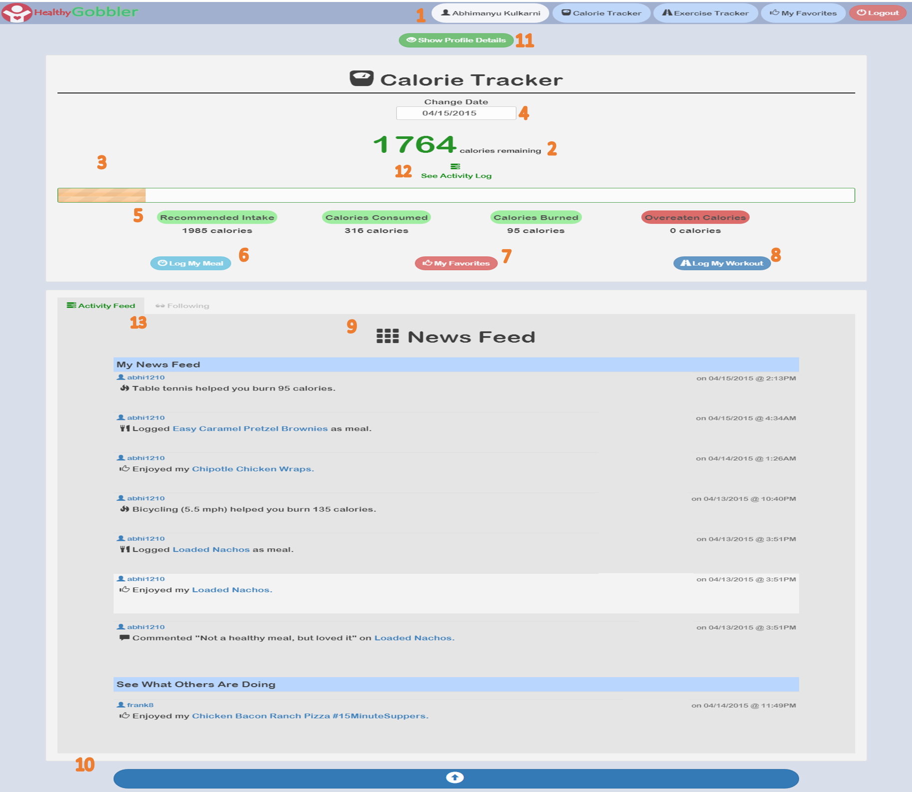

Dashboard Page
The dashboard page is the heart of this application. All useful information and content that the user
of this application should know or have is on this page. Below is a labelled screen shot of the dashboard. Importance of each label is
explained below.
Dashboard

Dashboard Description:
-
1
- This is the navigation bar that is fixed to top of the screen
- To avoid hindrance of the navigation bar in the flow of the application, it animates and
hides itself when the user scrolls down.
- There are links to the Calorie Tracker, Exercise Tracker, Favorites and Logout on the navigation bar
- The navigation bar is fully responsive and collapses for smaller screens
-
2
- This shows the calories remaining for the user on that particular day.
-
For example, in the screen shot above, the user's recommended intake is 1985 calories per day. He has
consumed 316 calories worth of meal during that day. He has also burned 95 calories. The total calculation
comes out to be 1764 calories
-
3
- This is an animated progress bar that shows the percentage of calories consumed on a particular day.
-
4
- User has an option to change the date and check his/her past records.
-
5
- Below the progress bar, the user can see his recommended daily calorie intake, calories consumed on the date chosen in the date field
, calories burned by logging exercises and calories that were overeaten for a particular day.
-
6
-
'Log My Meal' is an option that takes the user to search meal page where he can search the meal he consumed and wants to log.
-
7
-
'My Favorites' takes the user to a screen where all the meals that the user liked are displayed in a table.
He can get information like calorie content of the meal, the meal's snapshot and the instructions to cook
that meal.
-
8
-
'Log My Workout' is a button that takes user to the Exercise Tracker page. On that page the user can choose the
exercise that he did and log the calories that he burned.
-
9
-
This is a News Feed that the user tracks all the user's activities and shows it in descending order of date. Users can
also see the activities that other users are doing in this feed. To leverage this, they first have to find users of the application
and explicitly follow them.
-
10
-
This is a navigation button that takes user to the top of the page. The activity feed can get too long (We have see this in applications like Facebook, Google+ etc.). This
button is a quick navigation to the top of the page so that the user does not have to scroll everytime.
-
11
-
When the user lands on the dashboard, a button on top of the page toggle's the user's information card. This card is like an ID displayed on top of the page and can be hidden or shown.
If the user makes progress and his weight changes or his height increases, he can open up the information card and edit his profile.
-
12
-
'See Activity Log' is another navigation link that scrolls down to the activity feed section of the page. This makes navigation easy to user and fast.
-
13
-
By default, the user is shown the activity feed on the dashboard. In this section the user has an option to switch the tabs and open the 'Following' section of
the page. On that section, user can search for other users by username and follow them or unfollow users that they are already following.